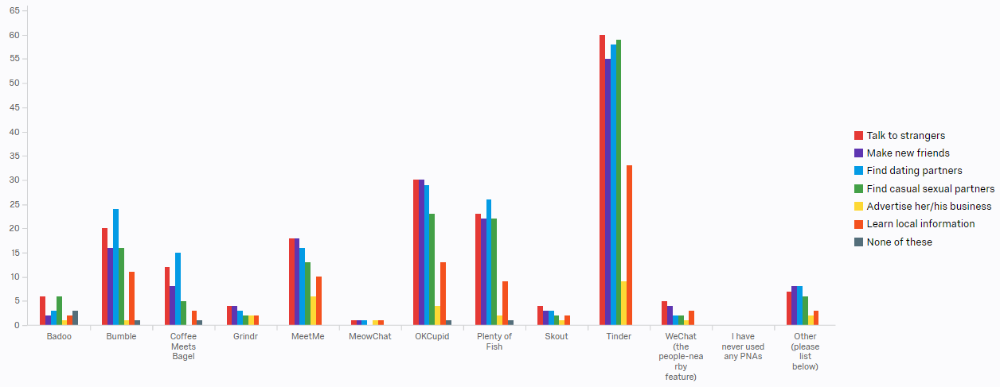

Since Fall 2016, I have been working with the Social Innovations Group (SIG) at the University of Michigan School of Information. SIG consists of an interdisciplinary team of individuals specializing in the research and development of ubiquitous and social computing technologies. Our vision is simple: To design, build and enhance innovative technologies to solve real-world problems. Our expertise lies in addressing real-world problems affecting marginalized groups and individuals based primarily in the U.S.
My research mentor who assigns me tasks and discusses the research with me, is Joey Hsiao. He is currently a Ph.D student at the U of M School of Information (UMSI).
The principal investigator of the research is Dr. Tawanna Dillahunt, who is an associate professor at UMSI.
What are the possible benefits and challenges of People-Nearby Applications (PNAs) and other digital resources for newly-arrived immigrants?
PNAs are a type of social-matching system utilizing location information for people to meet other people nearby. Examples include Tinder, OKCupid, MeetMe, Bumble, and more.
I explore the different groups of immigrants that live in the United States and in the Ann Arbor area. Some immigrants do not speak English and just want to live a simple life. Others seek to learn English and are pursuing higher education in order to elevate their socioeconomic status and assimilate into American culture.
In addition, I assist in conducting interviews with immigrants as well as tutors and staff who volunteer at community organizations that help immigrants adapt to the unfamiliar setting. I also examine immigrant and volunteer behavior and experiences, analyze surveys using Qualtrics survey software, and code semi-structured interviews from those immigrants and volunteers.
Finally, I work to understand how digital tools such as social networking sites can suit those individuals' different needs. Many of those needs include expanding immigrants' social networks to gain local job and English learning opportunities, and ensuring proper communication between those immigrants and volunteers.
These are the questions that our research currently aims to answer:
Research Question (RQ) 1. What technologies do immigrants use to make new connections and maintain relationships in the host-country? What needs are/are not addressed by these social technologies?
RQ2. In what context do immigrants make new connections?
RQ3. For those who know what PNAs are, what perceptions of PNAs do immigrants have?
– RQ3A. What opportunities do they perceive are available, if any, from PNAs?
– RQ3B. What risks do they perceive are possible, if any, from PNAs?
RQ4. For those who do not know what PNAs are, what perceptions of using technologies to making new connections do immigrants have?
RQ5. How do current commercial PNAs address or not address the social needs of immigrants?
First, we found that participants used Facebook groups and Meetup.com to make new connections. They also used messenger applications, such as Skype, WhatsApp, and Viber, which provide voice and chat functionality
Five out of seven immigrant participants and two volunteer participants were positive about the idea that immigrants make new connections through the Internet.
One volunteer participant was opposed to the idea because she thought the risk is bi-directional. She said that some immigrants may take advantage of local people.
After 104 completed responses, here are the results:
Figure 1 - What PNAs have you used or are currently using?
Figure 2 - In the following statements, please state the level of agreement you feel with the statement. "I feel I can do the following using Tinder:"
Figure 3 - Scenario - A Native of Your Current City - Imagine that you have an acquaintance who is a native of your current city and speaks the local language fluently. The person has a lot of friends in this area. Based on your perception of the applications, please check all activities you will suggest your acquaintance to do on each application.

Figure 4- Scenario - A Newcomer - Imagine that you have an acquaintance who is a newcomer to your current city and speaks the local language fluently. The person has few friends in this area. Based on your perception of the applications, please check all activities you will suggest your acquaintance to do on each application.
Figure 5- Scenario - A Newly Arrived Immigrant - Imagine that you have an acquaintance who is an immigrant who is new to your current city and does not speak the local language fluently. The person has few friends in this area. Based on your perception of the applications, please check all activities you will suggest your acquaintance to do on each application.

By far, the most popular PNA is Tinder, followed by OKCupid, Plenty of Fish, and Bumble.
Most of our respondents agree that PNAs are more suitable to talk to strangers, make new friends, find dating partners, and find casual sexual partners. However, some respondents agree that PNAs can be used for learning local information and gaining social and cultural capital.
These results reveal many challenges that would allow current commercial PNAs to address immigrants’ social needs. Some of these challenges are:
- Are PNAs appropriate for immigrants to make new connections?
- How can immigrants use PNAs to interact with other people when they potentially face language barriers?
On April 19th, 2017, I presented my research at the Undergraduate Research Opportunity Program Symposium where I shared my work to others and answered any questions they have.
In the future, we plan to further explore whether specific PNAs can fit immigrants’ needs and can serve as a support platform. We are currently conducting more interviews and plan to compare the use of commercial PNAs to our own prototypes among immigrant populations in the future.
 BACKGROUND
BACKGROUND PROCESS
PROCESS